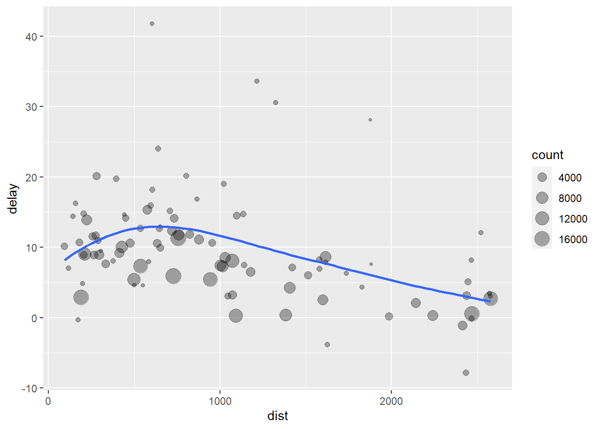

32 Transformering av data
32.1 Introduktion
Visualisering är en viktig del i att förstå innehållet i datamängder men det är sällsynt att du får en datafil som är organiserad exakt som du vill ha den.
Ofta behöver du skapa några nya variabler eller summeringar, kanske du bara vill byta namn på variablerna eller ordna om observationerna för att förenkla hanteringen. I detta kapitel går vi igenom de viktigaste verktygen för att ordna data som du vill ha dem. Vi gör det med hjälp av modulen dplyr och ett dataset som innehåller information om flighter från New York City 2013.
32.2 Förberedelser
Vi börjar med att installera modulen nycflights13:
Vi laddar in modulerna
När man laddar in tidyverse kommer ett antal felmeddelanden/varningar som talar om att dplyr skriver över några av funktionerna i base R, t.ex. filter() och lag(). Det är helt OK.
Datasetet vi ska använda finns i modulen nycflights13 och kallas flights. Du kan få information om innehållet genom hjälpfunktionen
?flights
Det är en dataframe som innehåller information om samtliga 336 776 flighter som lyfte från NYC airport 2013. Du kan få en bild av hur tabellen är uppbyggd genom att skriva tabellnamnet
## # A tibble: 336,776 x 19
## year month day dep_time sched_dep_time dep_delay arr_time sched_arr_time arr_delay carrier flight tailnum origin dest air_time distance hour minute time_hour
## <int> <int> <int> <int> <int> <dbl> <int> <int> <dbl> <chr> <int> <chr> <chr> <chr> <dbl> <dbl> <dbl> <dbl> <dttm>
## 1 2013 1 1 517 515 2 830 819 11 UA 1545 N14228 EWR IAH 227 1400 5 15 2013-01-01 05:00:00
## 2 2013 1 1 533 529 4 850 830 20 UA 1714 N24211 LGA IAH 227 1416 5 29 2013-01-01 05:00:00
## 3 2013 1 1 542 540 2 923 850 33 AA 1141 N619AA JFK MIA 160 1089 5 40 2013-01-01 05:00:00
## 4 2013 1 1 544 545 -1 1004 1022 -18 B6 725 N804JB JFK BQN 183 1576 5 45 2013-01-01 05:00:00
## 5 2013 1 1 554 600 -6 812 837 -25 DL 461 N668DN LGA ATL 116 762 6 0 2013-01-01 06:00:00
## 6 2013 1 1 554 558 -4 740 728 12 UA 1696 N39463 EWR ORD 150 719 5 58 2013-01-01 05:00:00
## 7 2013 1 1 555 600 -5 913 854 19 B6 507 N516JB EWR FLL 158 1065 6 0 2013-01-01 06:00:00
## 8 2013 1 1 557 600 -3 709 723 -14 EV 5708 N829AS LGA IAD 53 229 6 0 2013-01-01 06:00:00
## 9 2013 1 1 557 600 -3 838 846 -8 B6 79 N593JB JFK MCO 140 944 6 0 2013-01-01 06:00:00
## 10 2013 1 1 558 600 -2 753 745 8 AA 301 N3ALAA LGA ORD 138 733 6 0 2013-01-01 06:00:00
## # ... with 336,766 more rowsDet som syns i output är en s.k. tibble, vilket är en modifierad tabell som visar de översta tabellraderna och de kolumner som får plats i förnstret. Du kan se hela tabellen genom kommandot
Vilket öppnar hela tabellen i editorn uppe till vänster. Tibbles är en speciell form av datatabell som fungerar lite effektivare i tidyverse och vi återkommer till detaljerna senare.
Notera raden under variabelnamnen med de tre bokstäverna inom <…>. Dessa bokstäver beskriver data-typen för varje variabel:
- Int = ental (integer)
- Dbl = reella tal (doubles)
- Chr = textsträng (character)
- Dttm = datum/tid (date and time)Det finns ytterligare tre data-typer som vi återkommer till:
- Lgl = logisk (logical; TRUE/FALSE)
- Fctr = kategorisk (factor)
- Date = datum32.3 dplyr grunder
Vi ska jobba med fem nyckelfunktioner i dplyr som klarar de flesta manipualtioner av rådata:
-filter() används för att välja ut poster baserat på variabelvärden
-arrange() används för att förändra ordningsföljden av posterna i en tabell
-select() används för att välja ut variabler
-mutate() används för att skapa nya variabler
-summarise() används för att summera eller aggregera poster
Dessa funktioner används ofta tillsammans med group_by() som är en funktion vilken grupperar data och utnyttjar någon eller flera av de fem funktionerna på varje grupp snarare än på hela datamängden.
Dessa funktioner fungerar på liknande sätt:
- Det första argumentet är namnet på datamängden/tabellen
- De följande argumenten beskriver vad som ska göras med tabellen, genom att inkludera variabelnamnen
- Resultet är en ny datatabell
Sammantaget gör dessa egenskaper det relativt lätt att länka samman flera enkla steg till en mer komplex kedja av manipulationer. Låt oss se hur det fungerar praktiskt.
32.3.1 Filtrera rader/poster med filter()
filter() låter dig välja ut en delmängd av posterna baserat på variabelvärden. De första argumentet är namnet på datamängden/tabellen. De övriga argumenten är uttryck som preciserar vad filtret ska göra. Vi börjar med att välja ut samtliga flighter som skedde den 1 januari.
## # A tibble: 842 x 19
## year month day dep_time sched_dep_time dep_delay arr_time sched_arr_time arr_delay carrier flight tailnum origin dest air_time distance hour minute time_hour
## <int> <int> <int> <int> <int> <dbl> <int> <int> <dbl> <chr> <int> <chr> <chr> <chr> <dbl> <dbl> <dbl> <dbl> <dttm>
## 1 2013 1 1 517 515 2 830 819 11 UA 1545 N14228 EWR IAH 227 1400 5 15 2013-01-01 05:00:00
## 2 2013 1 1 533 529 4 850 830 20 UA 1714 N24211 LGA IAH 227 1416 5 29 2013-01-01 05:00:00
## 3 2013 1 1 542 540 2 923 850 33 AA 1141 N619AA JFK MIA 160 1089 5 40 2013-01-01 05:00:00
## 4 2013 1 1 544 545 -1 1004 1022 -18 B6 725 N804JB JFK BQN 183 1576 5 45 2013-01-01 05:00:00
## 5 2013 1 1 554 600 -6 812 837 -25 DL 461 N668DN LGA ATL 116 762 6 0 2013-01-01 06:00:00
## 6 2013 1 1 554 558 -4 740 728 12 UA 1696 N39463 EWR ORD 150 719 5 58 2013-01-01 05:00:00
## 7 2013 1 1 555 600 -5 913 854 19 B6 507 N516JB EWR FLL 158 1065 6 0 2013-01-01 06:00:00
## 8 2013 1 1 557 600 -3 709 723 -14 EV 5708 N829AS LGA IAD 53 229 6 0 2013-01-01 06:00:00
## 9 2013 1 1 557 600 -3 838 846 -8 B6 79 N593JB JFK MCO 140 944 6 0 2013-01-01 06:00:00
## 10 2013 1 1 558 600 -2 753 745 8 AA 301 N3ALAA LGA ORD 138 733 6 0 2013-01-01 06:00:00
## # ... with 832 more rowsNär koden körs filtreras flights och en ny tabell skapas. Dplyr förändrar aldrig ursprungsdata så om du vill spara resultatet för vidare bearbetning behöver du tillägna det ett namn, t.ex.:
32.3.1.1 Jämförelser
För att använda filtrering effektivt bör du känna till hur jämförelseoperatorerna används. Dessa är de etablerade:
>, >=, <, <=, != och ==.
Det är lätt att man råkar använda = istället för == när man vill testa för exakt likhet. Pröva
filter(flights, month = 1)
32.3.1.2 Logiska operatorer
Man kan förstås använda multipla argument för filtrering. Sedvanliga Booleanska operatorer fungerar, dvs
&för “och”|för “eller”!för “icke”
Se figuren nedan.

Följande kod filtrerar fram samtliga fligheter som lyfte under november eller december:
## # A tibble: 55,403 x 19
## year month day dep_time sched_dep_time dep_delay arr_time sched_arr_time arr_delay carrier flight tailnum origin dest air_time distance hour minute time_hour
## <int> <int> <int> <int> <int> <dbl> <int> <int> <dbl> <chr> <int> <chr> <chr> <chr> <dbl> <dbl> <dbl> <dbl> <dttm>
## 1 2013 11 1 5 2359 6 352 345 7 B6 745 N568JB JFK PSE 205 1617 23 59 2013-11-01 23:00:00
## 2 2013 11 1 35 2250 105 123 2356 87 B6 1816 N353JB JFK SYR 36 209 22 50 2013-11-01 22:00:00
## 3 2013 11 1 455 500 -5 641 651 -10 US 1895 N192UW EWR CLT 88 529 5 0 2013-11-01 05:00:00
## 4 2013 11 1 539 545 -6 856 827 29 UA 1714 N38727 LGA IAH 229 1416 5 45 2013-11-01 05:00:00
## 5 2013 11 1 542 545 -3 831 855 -24 AA 2243 N5CLAA JFK MIA 147 1089 5 45 2013-11-01 05:00:00
## 6 2013 11 1 549 600 -11 912 923 -11 UA 303 N595UA JFK SFO 359 2586 6 0 2013-11-01 06:00:00
## 7 2013 11 1 550 600 -10 705 659 6 US 2167 N748UW LGA DCA 57 214 6 0 2013-11-01 06:00:00
## 8 2013 11 1 554 600 -6 659 701 -2 US 2134 N742PS LGA BOS 40 184 6 0 2013-11-01 06:00:00
## 9 2013 11 1 554 600 -6 826 827 -1 DL 563 N912DE LGA ATL 126 762 6 0 2013-11-01 06:00:00
## 10 2013 11 1 554 600 -6 749 751 -2 DL 731 N315NB LGA DTW 93 502 6 0 2013-11-01 06:00:00
## # ... with 55,393 more rowsViktigt att ange kompletta argument! Det kan t.ex. vara förvirrande att filter(flights, month == 11 | 12)
kommer att ange samtliga flighter i januari, inte i november eller december. Det hänger samman med att uttrycket
11|12 är ett logiskt argument och utvärderas till sant, dvs TRUE. I ett numeriskt sammanhang som här blir TRUE = 1 dvs tolkas som månaden 1, alltså januari!
Ett användbart snabbkommando för detta filtreringsproblem är x %in% y. detta söker ut samtliga poster där x är något av värdena i y. För att filtrera fram samtliga flighter under nov-dec kan vi då skriva:
Närhelst du ska använda mer komplexa uttryck för att filtrera data bör du överväga att göra dem till explicita, ev temporära, variabler istället. Det gör det lättare att kontrollera eller felsöka kod. Återkommer strax till hur nya variabler skapas.
32.3.1.3 Missing
Ett viktigt drag i R är hanteringen av missing values (NA - not availables) vilka representerar okända värden och är därför “smittsamma” - nästan varje behandling av data som innehåller NA kommer också att bli NA. Pröva:
## [1] NA## [1] NA## [1] NA## [1] NAOm du vill avgöra om ett värde är NA kan du använda is.na():
## [1] TRUEfilter() inkluderar endast poster där villkoret är sant (TRUE). Det exkluderar således alla FALSE men också alla NA. Om man vill få med NA i filtreringen behöver de ingå explicit i villkoret:
## # A tibble: 1 x 1
## x
## <dbl>
## 1 3## # A tibble: 2 x 1
## x
## <dbl>
## 1 NA
## 2 332.4 Övningar
- Hitta samtliga flighter
- med en försenad ankomst mer än 2 timmar.
- Lyfte med destination Houston
- Avgick under juli, aug, september
- Ankom med mer än 2 timmars försening men lyfte i tid
- Ett annat filter-verktyg är
between(). Hur fungerar det? Kan man förenkla filtreringarna i punkt 1 med hjälp avbetween()? - Hur många flighter saknar data för
dep_time?
32.5 Arrangera poster med arrange()
arrange() fungerar på liknande sätt som filter() men istället för att filtrera poster så ändrar man deras inbördes ordning. Funktionen tar en data-frame och en eller flera kolumner för att ordna posterna. Om du använder mer än en kolumn kommer varje ytterligare kolumn att användas för att skapa brytpunkter i de följande kolumnerna. Pröva
## # A tibble: 336,776 x 19
## year month day dep_time sched_dep_time dep_delay arr_time sched_arr_time arr_delay carrier flight tailnum origin dest air_time distance hour minute time_hour
## <int> <int> <int> <int> <int> <dbl> <int> <int> <dbl> <chr> <int> <chr> <chr> <chr> <dbl> <dbl> <dbl> <dbl> <dttm>
## 1 2013 1 1 517 515 2 830 819 11 UA 1545 N14228 EWR IAH 227 1400 5 15 2013-01-01 05:00:00
## 2 2013 1 1 533 529 4 850 830 20 UA 1714 N24211 LGA IAH 227 1416 5 29 2013-01-01 05:00:00
## 3 2013 1 1 542 540 2 923 850 33 AA 1141 N619AA JFK MIA 160 1089 5 40 2013-01-01 05:00:00
## 4 2013 1 1 544 545 -1 1004 1022 -18 B6 725 N804JB JFK BQN 183 1576 5 45 2013-01-01 05:00:00
## 5 2013 1 1 554 600 -6 812 837 -25 DL 461 N668DN LGA ATL 116 762 6 0 2013-01-01 06:00:00
## 6 2013 1 1 554 558 -4 740 728 12 UA 1696 N39463 EWR ORD 150 719 5 58 2013-01-01 05:00:00
## 7 2013 1 1 555 600 -5 913 854 19 B6 507 N516JB EWR FLL 158 1065 6 0 2013-01-01 06:00:00
## 8 2013 1 1 557 600 -3 709 723 -14 EV 5708 N829AS LGA IAD 53 229 6 0 2013-01-01 06:00:00
## 9 2013 1 1 557 600 -3 838 846 -8 B6 79 N593JB JFK MCO 140 944 6 0 2013-01-01 06:00:00
## 10 2013 1 1 558 600 -2 753 745 8 AA 301 N3ALAA LGA ORD 138 733 6 0 2013-01-01 06:00:00
## # ... with 336,766 more rowsMan kan använda desc() för att sortera posterna i sjunkande ordning:
## # A tibble: 336,776 x 19
## year month day dep_time sched_dep_time dep_delay arr_time sched_arr_time arr_delay carrier flight tailnum origin dest air_time distance hour minute time_hour
## <int> <int> <int> <int> <int> <dbl> <int> <int> <dbl> <chr> <int> <chr> <chr> <chr> <dbl> <dbl> <dbl> <dbl> <dttm>
## 1 2013 1 9 641 900 1301 1242 1530 1272 HA 51 N384HA JFK HNL 640 4983 9 0 2013-01-09 09:00:00
## 2 2013 6 15 1432 1935 1137 1607 2120 1127 MQ 3535 N504MQ JFK CMH 74 483 19 35 2013-06-15 19:00:00
## 3 2013 1 10 1121 1635 1126 1239 1810 1109 MQ 3695 N517MQ EWR ORD 111 719 16 35 2013-01-10 16:00:00
## 4 2013 9 20 1139 1845 1014 1457 2210 1007 AA 177 N338AA JFK SFO 354 2586 18 45 2013-09-20 18:00:00
## 5 2013 7 22 845 1600 1005 1044 1815 989 MQ 3075 N665MQ JFK CVG 96 589 16 0 2013-07-22 16:00:00
## 6 2013 4 10 1100 1900 960 1342 2211 931 DL 2391 N959DL JFK TPA 139 1005 19 0 2013-04-10 19:00:00
## 7 2013 3 17 2321 810 911 135 1020 915 DL 2119 N927DA LGA MSP 167 1020 8 10 2013-03-17 08:00:00
## 8 2013 7 22 2257 759 898 121 1026 895 DL 2047 N6716C LGA ATL 109 762 7 59 2013-07-22 07:00:00
## 9 2013 12 5 756 1700 896 1058 2020 878 AA 172 N5DMAA EWR MIA 149 1085 17 0 2013-12-05 17:00:00
## 10 2013 5 3 1133 2055 878 1250 2215 875 MQ 3744 N523MQ EWR ORD 112 719 20 55 2013-05-03 20:00:00
## # ... with 336,766 more rows32.6 Övningar
- Hur kan du använda
arrange()för att sortera alla missing values? (minns funktionenis.na()) - Sortera
flightsför att identifiera de mest försenade flighterna. Gör samma för de som lyfte tidigast. - Sortera
flightsför att identifiera de snabbaste flighterna. - Vilka flighter flög längst? Kortast?
32.7 Välj kolumner med select()
Många gånger får man rådata med mängder av variabler och behöver egentligen endast ett fåtal. Funktionen select() ger möjlighet att snabbt avgränsa datamängden till de variabler man vill använda, baserat på variabelnamnen.
Välj kolumner med hjälp av deras namn:
## # A tibble: 336,776 x 3
## year month day
## <int> <int> <int>
## 1 2013 1 1
## 2 2013 1 1
## 3 2013 1 1
## 4 2013 1 1
## 5 2013 1 1
## 6 2013 1 1
## 7 2013 1 1
## 8 2013 1 1
## 9 2013 1 1
## 10 2013 1 1
## # ... with 336,766 more rowsVälj samtliga kolumner fr.o.m. year t.o.m. day:
## # A tibble: 336,776 x 3
## year month day
## <int> <int> <int>
## 1 2013 1 1
## 2 2013 1 1
## 3 2013 1 1
## 4 2013 1 1
## 5 2013 1 1
## 6 2013 1 1
## 7 2013 1 1
## 8 2013 1 1
## 9 2013 1 1
## 10 2013 1 1
## # ... with 336,766 more rowsVälj samtliga kolumner utom kolumnerna fr.o.m. year t.o.m. day:
## # A tibble: 336,776 x 16
## dep_time sched_dep_time dep_delay arr_time sched_arr_time arr_delay carrier flight tailnum origin dest air_time distance hour minute time_hour
## <int> <int> <dbl> <int> <int> <dbl> <chr> <int> <chr> <chr> <chr> <dbl> <dbl> <dbl> <dbl> <dttm>
## 1 517 515 2 830 819 11 UA 1545 N14228 EWR IAH 227 1400 5 15 2013-01-01 05:00:00
## 2 533 529 4 850 830 20 UA 1714 N24211 LGA IAH 227 1416 5 29 2013-01-01 05:00:00
## 3 542 540 2 923 850 33 AA 1141 N619AA JFK MIA 160 1089 5 40 2013-01-01 05:00:00
## 4 544 545 -1 1004 1022 -18 B6 725 N804JB JFK BQN 183 1576 5 45 2013-01-01 05:00:00
## 5 554 600 -6 812 837 -25 DL 461 N668DN LGA ATL 116 762 6 0 2013-01-01 06:00:00
## 6 554 558 -4 740 728 12 UA 1696 N39463 EWR ORD 150 719 5 58 2013-01-01 05:00:00
## 7 555 600 -5 913 854 19 B6 507 N516JB EWR FLL 158 1065 6 0 2013-01-01 06:00:00
## 8 557 600 -3 709 723 -14 EV 5708 N829AS LGA IAD 53 229 6 0 2013-01-01 06:00:00
## 9 557 600 -3 838 846 -8 B6 79 N593JB JFK MCO 140 944 6 0 2013-01-01 06:00:00
## 10 558 600 -2 753 745 8 AA 301 N3ALAA LGA ORD 138 733 6 0 2013-01-01 06:00:00
## # ... with 336,766 more rowsDet finns ett antal hjälpfunktioner som kan användas med select():
starts_with("abc"): matchar namn som börjar med “abc”.ends_with("xyz"): matchar namn som slutar med “xyz”.contains("ijk"): Matchar namn som innehåller “ijk”.matches("(.)\\1"): väljer variabler som matchar ett regular expression. Detta exempel matchar varje variabel som innehåller upprepade tecken. Vi ska kika mer på regular expressions senare.num_range("x", 1:3)matchar x1, x2 and x3.
Använd ?select för mer information.
select() kan användas för att ändra variabelnamn men är sällan en lämplig funktion för detta eftersom select() droppar alla de variabler som inte nämns explicit. Använd istället rename():
## # A tibble: 336,776 x 19
## year month day dep_time sched_dep_time dep_delay arr_time sched_arr_time arr_delay carrier flight tail_num origin dest air_time distance hour minute time_hour
## <int> <int> <int> <int> <int> <dbl> <int> <int> <dbl> <chr> <int> <chr> <chr> <chr> <dbl> <dbl> <dbl> <dbl> <dttm>
## 1 2013 1 1 517 515 2 830 819 11 UA 1545 N14228 EWR IAH 227 1400 5 15 2013-01-01 05:00:00
## 2 2013 1 1 533 529 4 850 830 20 UA 1714 N24211 LGA IAH 227 1416 5 29 2013-01-01 05:00:00
## 3 2013 1 1 542 540 2 923 850 33 AA 1141 N619AA JFK MIA 160 1089 5 40 2013-01-01 05:00:00
## 4 2013 1 1 544 545 -1 1004 1022 -18 B6 725 N804JB JFK BQN 183 1576 5 45 2013-01-01 05:00:00
## 5 2013 1 1 554 600 -6 812 837 -25 DL 461 N668DN LGA ATL 116 762 6 0 2013-01-01 06:00:00
## 6 2013 1 1 554 558 -4 740 728 12 UA 1696 N39463 EWR ORD 150 719 5 58 2013-01-01 05:00:00
## 7 2013 1 1 555 600 -5 913 854 19 B6 507 N516JB EWR FLL 158 1065 6 0 2013-01-01 06:00:00
## 8 2013 1 1 557 600 -3 709 723 -14 EV 5708 N829AS LGA IAD 53 229 6 0 2013-01-01 06:00:00
## 9 2013 1 1 557 600 -3 838 846 -8 B6 79 N593JB JFK MCO 140 944 6 0 2013-01-01 06:00:00
## 10 2013 1 1 558 600 -2 753 745 8 AA 301 N3ALAA LGA ORD 138 733 6 0 2013-01-01 06:00:00
## # ... with 336,766 more rowsEtt annat alternativ är att använda hjälpfunktionen everything(). Detta kan vara praktiskt då du vill flytta vissa variabler t.ex. till början av datamängden:
## # A tibble: 336,776 x 19
## time_hour air_time year month day dep_time sched_dep_time dep_delay arr_time sched_arr_time arr_delay carrier flight tailnum origin dest distance hour minute
## <dttm> <dbl> <int> <int> <int> <int> <int> <dbl> <int> <int> <dbl> <chr> <int> <chr> <chr> <chr> <dbl> <dbl> <dbl>
## 1 2013-01-01 05:00:00 227 2013 1 1 517 515 2 830 819 11 UA 1545 N14228 EWR IAH 1400 5 15
## 2 2013-01-01 05:00:00 227 2013 1 1 533 529 4 850 830 20 UA 1714 N24211 LGA IAH 1416 5 29
## 3 2013-01-01 05:00:00 160 2013 1 1 542 540 2 923 850 33 AA 1141 N619AA JFK MIA 1089 5 40
## 4 2013-01-01 05:00:00 183 2013 1 1 544 545 -1 1004 1022 -18 B6 725 N804JB JFK BQN 1576 5 45
## 5 2013-01-01 06:00:00 116 2013 1 1 554 600 -6 812 837 -25 DL 461 N668DN LGA ATL 762 6 0
## 6 2013-01-01 05:00:00 150 2013 1 1 554 558 -4 740 728 12 UA 1696 N39463 EWR ORD 719 5 58
## 7 2013-01-01 06:00:00 158 2013 1 1 555 600 -5 913 854 19 B6 507 N516JB EWR FLL 1065 6 0
## 8 2013-01-01 06:00:00 53 2013 1 1 557 600 -3 709 723 -14 EV 5708 N829AS LGA IAD 229 6 0
## 9 2013-01-01 06:00:00 140 2013 1 1 557 600 -3 838 846 -8 B6 79 N593JB JFK MCO 944 6 0
## 10 2013-01-01 06:00:00 138 2013 1 1 558 600 -2 753 745 8 AA 301 N3ALAA LGA ORD 733 6 0
## # ... with 336,766 more rows32.8 Övningar
- Vad händer om du använder ett variabelnamn flera gånger i
select()? - Vad åstadkommer hjälpfunktionen
one_of()? Varför kan den vara till nytta tillsammans med nedanstående vektor?
- Blir du förvånad över resultatet av följande kod? Hur kan hjälpfunktionerna till
select()hantera dessa “by default”? Hur kan du ändra “default”?
## # A tibble: 336,776 x 6
## dep_time sched_dep_time arr_time sched_arr_time air_time time_hour
## <int> <int> <int> <int> <dbl> <dttm>
## 1 517 515 830 819 227 2013-01-01 05:00:00
## 2 533 529 850 830 227 2013-01-01 05:00:00
## 3 542 540 923 850 160 2013-01-01 05:00:00
## 4 544 545 1004 1022 183 2013-01-01 05:00:00
## 5 554 600 812 837 116 2013-01-01 06:00:00
## 6 554 558 740 728 150 2013-01-01 05:00:00
## 7 555 600 913 854 158 2013-01-01 06:00:00
## 8 557 600 709 723 53 2013-01-01 06:00:00
## 9 557 600 838 846 140 2013-01-01 06:00:00
## 10 558 600 753 745 138 2013-01-01 06:00:00
## # ... with 336,766 more rows32.9 Lägg till flera variabler med hjälp av mutate()
Förutom att välja ut variabler behöver man ofta lägga till nya variabler vilka är funktioner av befintliga variabler. Det är vad funktionen mutate() gör.
mutate() lägger alltid till de nya variablerna sist i datamängden. Vi börjar med att reducera antalet variabler så att kolumnerena blir mer lättöverskådliga:
flights_sml <- select(flights,
year:day,
ends_with("delay"),
distance,
air_time
)
mutate(flights_sml,
gain = arr_delay - dep_delay,
speed = distance / air_time * 60
)## # A tibble: 336,776 x 9
## year month day dep_delay arr_delay distance air_time gain speed
## <int> <int> <int> <dbl> <dbl> <dbl> <dbl> <dbl> <dbl>
## 1 2013 1 1 2 11 1400 227 9 370.
## 2 2013 1 1 4 20 1416 227 16 374.
## 3 2013 1 1 2 33 1089 160 31 408.
## 4 2013 1 1 -1 -18 1576 183 -17 517.
## 5 2013 1 1 -6 -25 762 116 -19 394.
## 6 2013 1 1 -4 12 719 150 16 288.
## 7 2013 1 1 -5 19 1065 158 24 404.
## 8 2013 1 1 -3 -14 229 53 -11 259.
## 9 2013 1 1 -3 -8 944 140 -5 405.
## 10 2013 1 1 -2 8 733 138 10 319.
## # ... with 336,766 more rowsNotera att du kan referera till de nya kolumnerna:
mutate(flights_sml,
gain = arr_delay - dep_delay,
hours = air_time / 60,
gain_per_hour = gain / hours
)## # A tibble: 336,776 x 10
## year month day dep_delay arr_delay distance air_time gain hours gain_per_hour
## <int> <int> <int> <dbl> <dbl> <dbl> <dbl> <dbl> <dbl> <dbl>
## 1 2013 1 1 2 11 1400 227 9 3.78 2.38
## 2 2013 1 1 4 20 1416 227 16 3.78 4.23
## 3 2013 1 1 2 33 1089 160 31 2.67 11.6
## 4 2013 1 1 -1 -18 1576 183 -17 3.05 -5.57
## 5 2013 1 1 -6 -25 762 116 -19 1.93 -9.83
## 6 2013 1 1 -4 12 719 150 16 2.5 6.4
## 7 2013 1 1 -5 19 1065 158 24 2.63 9.11
## 8 2013 1 1 -3 -14 229 53 -11 0.883 -12.5
## 9 2013 1 1 -3 -8 944 140 -5 2.33 -2.14
## 10 2013 1 1 -2 8 733 138 10 2.3 4.35
## # ... with 336,766 more rowsOm du vill endast behålla de nya variablerna kan du använda transmute():
transmute(flights,
gain = arr_delay - dep_delay,
hours = air_time / 60,
gain_per_hour = gain / hours
)## # A tibble: 336,776 x 3
## gain hours gain_per_hour
## <dbl> <dbl> <dbl>
## 1 9 3.78 2.38
## 2 16 3.78 4.23
## 3 31 2.67 11.6
## 4 -17 3.05 -5.57
## 5 -19 1.93 -9.83
## 6 16 2.5 6.4
## 7 24 2.63 9.11
## 8 -11 0.883 -12.5
## 9 -5 2.33 -2.14
## 10 10 2.3 4.35
## # ... with 336,766 more rows32.9.1 Funktioner och operatorer att användas med mutate()
Den grundläggande egenskapen hos denna funktion är att den måste vektoriseras, dvs dess argument måste vara en vektor av värden (input) och den resulterar i en vektor av nya värden (output), lika många som input.
Det finns alldeles för många funktioner som man kan använda tillsammans med mutate() för att kunna lista dem här. Men de nedanstående är en uppsättning som är de vanligast förekommande:
- Aritmetiska operatorer:
+,-,*,/,^. Dessa vektoriseras genom “recycling rules”. Om en parameter är kortare än en annan kommer den att automatiskt förlängas till samma längd som den andra vektorn. Detta är mycket användbart då den ena parametern består av ett fixerat värde, t.ex.air_time/60ellerhours * 60 + minute. - Aritmetiska operatorer är också användbara tillsammans med aggregeringsfunktioner som vi ska kika på senare. Till exempel beräknar
x / sum(x)andelen av en total;y - mean(y)beräknar avvikelsen från medelvärdet. - Modulär aritmetik:
%/%(heltalsdivision) och%%(rest). Detta är en användbar funktion för att dekomponera ett heltal. Till exempel:
## # A tibble: 336,776 x 3
## dep_time hour minute
## <int> <dbl> <dbl>
## 1 517 5 17
## 2 533 5 33
## 3 542 5 42
## 4 544 5 44
## 5 554 5 54
## 6 554 5 54
## 7 555 5 55
## 8 557 5 57
## 9 557 5 57
## 10 558 5 58
## # ... with 336,766 more rows- Logaritmer:
log(),log2(),log10(). - Offsets:
lead()andlag()gör det möjligt att referera till värden tidigare eller senare i vektorn. Till exempel beräkna löpande skillnader( x - lag(x))eller att identifiera poster där värden förändras (x != lag(x)).
## [1] 1 2 3 4 5 6 7 8 9 10## [1] NA 1 2 3 4 5 6 7 8 9## [1] 2 3 4 5 6 7 8 9 10 NA- Kumulativa “aggregat”: R inehåller funktioner för löpande summor, produkter, minimum, maximum:
cumsum(),cumprod(),cummin(),cummax(); ochdplyrinnehållercummean()för kumulativa medelvärden.
## [1] 1 2 3 4 5 6 7 8 9 10## [1] 1 3 6 10 15 21 28 36 45 55## [1] 1.0 1.5 2.0 2.5 3.0 3.5 4.0 4.5 5.0 5.5Logiska jämförelser (se ovan):
<,<=,>,>=,!=. Tips: om du skapar en komplex sekvens av logiska operatorer är det ofta en god idé att lagra delvärden som nya variabler - det gör det lättare att kolla så att varje steg fungerar som det ska.Ranking: det finns ett antal ranking-funktioner av vilka
min_rank()är mest använd. Den gör den vanligaste typen av rankning, dvs första, andra, tredje osv. Default är att tilldela det lägsta värdet den lägsta rankningen. Man kan användadesc(x)för att tilldela det största värdet den lägsta rankningen:
## [1] 1 2 2 NA 4 5## [1] 5 3 3 NA 2 1Om min_rank() inte är det du söker, pröva row_number(), dense_rank(), percent_rank(), cume_dist(), ntile(). Se respektive hjälpsida för mer info.
## [1] 1 2 3 NA 4 5## [1] 1 2 2 NA 3 4## [1] 0.00 0.25 0.25 NA 0.75 1.00## [1] 0.2 0.6 0.6 NA 0.8 1.032.10 Övningar
dep_timeochsched_dep_timekan vara mer begripliga att se på men svårare att räkna med eftersom de inte innehåller kontinuerliga värden. Konvertera dem till mer användbara värden som antal minuter efter midnatt.- Jämför
air_timemedarr_time - dep_time. Vad förväntar du dig att se? Vad ser du? Vad behöver göras för att se det du förväntade dig? - Identifiera de 10 mest försenade flighterna genom att använda en rankningsfunktion.
- Vad returneras av
1:3 + 1:10? Varför? - Vilka trigonometriska funktioner finns i R?
32.11 Grupperade summeringar med summarise()
Den sista nyckelfunktionen är summarise(). Den slår samman en datamängd till en enda rad. Pröva:
## # A tibble: 1 x 1
## delay
## <dbl>
## 1 12.6(Vi återkommer till na.rm = TRUE alldeles strax.)
summarise() är inte särskilt användbart såvida vi inte samtidigt använder group_by(). Denna funktion förändrar “the unit of analysis” från hela datamängden till grupper av data. När du använder dplyr-funktionerna på en grupperad datamängd kommer funktionerna att automatiskt tillämpas på varje grupp. Så när vi till exempel tillämpar exakt samma kod som ovan på data som är grupperade per dag så får vi den genomsnittliga förseningen per dag. Pröva:
by_day <- group_by(flights, year, month, day)
summarise(by_day, delay = mean(dep_delay, na.rm = TRUE))## `summarise()` regrouping output by 'year', 'month' (override with `.groups` argument)## # A tibble: 365 x 4
## # Groups: year, month [12]
## year month day delay
## <int> <int> <int> <dbl>
## 1 2013 1 1 11.5
## 2 2013 1 2 13.9
## 3 2013 1 3 11.0
## 4 2013 1 4 8.95
## 5 2013 1 5 5.73
## 6 2013 1 6 7.15
## 7 2013 1 7 5.42
## 8 2013 1 8 2.55
## 9 2013 1 9 2.28
## 10 2013 1 10 2.84
## # ... with 355 more rowsgroup_by() och summarise() är tillsammans de verktyg du kommer att använda mest då du arbetar med dplyr, nämligen grupperade summeringar. Men innan vi går vidare med detta behöver vi kika på “the pipe” (hur översätter man detta?).
32.12 Kombinera multipla operationer med the pipe
Antag att vi vill undersöka relationen mellan avståndet och den genomsnittliga förseningen för varje destination. Vi kan skriva följande kod:
by_dest <- group_by(flights, dest)
delay <- summarise(by_dest,
count = n(),
dist = mean(distance, na.rm = TRUE),
delay = mean(arr_delay, na.rm = TRUE)
)## `summarise()` ungrouping output (override with `.groups` argument)Det verkar som förseningen ökar upp till ett avstånd runt 750 miles och sedan minskar. Kanske är det så att på en längre flygning finns större förutsättningar att hämta in en försening? Vi kan visualisera data genom:
ggplot(data = delay, mapping = aes(x = dist, y = delay)) +
geom_point(aes(size = count), alpha = 1/3) +
geom_smooth(se = FALSE)## `geom_smooth()` using method = 'loess' and formula 'y ~ x'
Dessa data förbereds i tre steg: 1. Gruppera flighter per destination. 2. Summera avstånd, genomsnittlig försening och antal flighter. 3. Filtrera bort brus och flighter till Honolulu, som ligger mer än dubbelt så långt bort som den näst längst bort.
Denna kod är lite omständlig att skriva eftersom vi behöver tilldela varje intermediär datamängd ett namn fastän vi inte är intresserade av själva datamängden i sig. Istället kan man skriva om koden med hjälp av “the pipe”, %>% (snabbtangenter Ctrl+Shift+m):
delays <- flights %>%
group_by(dest) %>%
summarise(
count = n(),
dist = mean(distance, na.rm = TRUE),
delay = mean(arr_delay, na.rm = TRUE)
) %>%
filter(count > 20, dest != "HNL")## `summarise()` ungrouping output (override with `.groups` argument)Detta fokuserar transformeringarna istället för det som transformeras, vilket gör koden lättare att läsa. Du kan läsa ut koden som en serie av länkade uppmaningar: “gruppera, sedan summera, sedan filtrera”. Man kan alltså använda “the pipe” för att skriva om multipla operationer så att de kan läsas från vänster till höger, uppifrån och ned.
Detta har blivit en ganska central del i det modernare R och rekommenderas starkt. MEN, det finns svagheter. Ett viktigt undantag är ggplot2 som skrevs innan “the pipe”-grammatiken utvecklades. Nästa generation av ggplot2 är dock under stark utveckling. Den modulen kallas ggvis (i skrivande stund version 0.4) och förutom att integrera “the pipe” är den tänkt att också integrera interaktiva diagram. Läs mer på Rstudios hemsida http://ggvis.rstudio.com .
32.13 Missing values
Vi använde tidigare argumentet na.rm().Vad händer om vi inte gör det? Pröva:
## `summarise()` regrouping output by 'year', 'month' (override with `.groups` argument)## # A tibble: 365 x 4
## # Groups: year, month [12]
## year month day mean
## <int> <int> <int> <dbl>
## 1 2013 1 1 NA
## 2 2013 1 2 NA
## 3 2013 1 3 NA
## 4 2013 1 4 NA
## 5 2013 1 5 NA
## 6 2013 1 6 NA
## 7 2013 1 7 NA
## 8 2013 1 8 NA
## 9 2013 1 9 NA
## 10 2013 1 10 NA
## # ... with 355 more rowsEn massa värden blir missing (NA)! Det blir så därför att de olika summeringsfunktionerna lyder under “the rule of missing values”: om det finns ett eller fler NA i input kommer output att vara ett NA. Argumentet na.rm() flyttar bort alla missing values (NA) innan beräkningen görs:
## `summarise()` regrouping output by 'year', 'month' (override with `.groups` argument)## # A tibble: 365 x 4
## # Groups: year, month [12]
## year month day mean
## <int> <int> <int> <dbl>
## 1 2013 1 1 11.5
## 2 2013 1 2 13.9
## 3 2013 1 3 11.0
## 4 2013 1 4 8.95
## 5 2013 1 5 5.73
## 6 2013 1 6 7.15
## 7 2013 1 7 5.42
## 8 2013 1 8 2.55
## 9 2013 1 9 2.28
## 10 2013 1 10 2.84
## # ... with 355 more rowsI detta fall där NA representerade inställda flyg, kan vi även genomföra en summering genom att först ta bort samtliga inställda flyg (= NA). Vi skapar ett nytt dataset för kommande exempel:
not_cancelled <- flights %>%
filter(!is.na(dep_delay), !is.na(arr_delay))
not_cancelled %>%
group_by(year, month, day) %>%
summarise(mean = mean(dep_delay))## `summarise()` regrouping output by 'year', 'month' (override with `.groups` argument)## # A tibble: 365 x 4
## # Groups: year, month [12]
## year month day mean
## <int> <int> <int> <dbl>
## 1 2013 1 1 11.4
## 2 2013 1 2 13.7
## 3 2013 1 3 10.9
## 4 2013 1 4 8.97
## 5 2013 1 5 5.73
## 6 2013 1 6 7.15
## 7 2013 1 7 5.42
## 8 2013 1 8 2.56
## 9 2013 1 9 2.30
## 10 2013 1 10 2.84
## # ... with 355 more rows32.14 Antal (counts)
Då man gör en summering är det ofta en bra idé att inkludera antalet observationer (vilket görs med funktionen n()) liksom antalet missing values (sum(!is.na(x))). På det sättet är det lätt att kolla så att man t.ex. inte drar slutsatser på flygplanen (identifierade genom deras tail numbers) med längst genomsnittlig försening:
## `summarise()` ungrouping output (override with `.groups` argument)
OK, det finns alltså plan med en genomsnittlig försening med mer än 5 timmar! Nja, det är lite mer komplicerat än så. Vi får mer information genom att att göra en scatterplot över antalet flighter vs. genomsnittlig försening:
delays <- not_cancelled %>%
group_by(tailnum) %>%
summarise(
delay = mean(arr_delay, na.rm = TRUE),
n = n()
)## `summarise()` ungrouping output (override with `.groups` argument)
Inte helt överraskande är det mycket större variation i genomsnittlig försening då flighterna är få. Scatterplotten är karakteristisk: då man plottar genomsnittsvärden (eller andra summeringar) mot gruppstorlek kommer variationen att minska då urvalsstorleken ökar. I dessa fall är det ofta användbart att filtrera ut grupperna med minst antal observationer vilket gör att man tydligare ser ev mönster och mindre av extrema värden. Detta åstadkommer vi med följande kod. Notera hur ggplot2-kod integreras i dplyr flödet. Visserligen lite retfullt att byta från %>% till + men det funkar:

Tips: ett användbart kortkommando är Ctrl+Shift+P. Då återanvänds det senaste kodavsnittet (i Rstudio-språk “the chunk”) och sänds från editorn till konsolen. Detta är smidigt när man t.ex. prövar olika värden på n i exemplet. Du skickar hela kodavsnittet med hjälp av Ctrl+Enter, sedan modifierar du värdet på n och återanvänder det genom Ctrl+Shift+P.
32.15 Användbara summeringsfunktioner
Man kan komma långt enbart med medelvärden, antal och summa men R innehåller många fler summeringsfunktioner:
- Medianvärdet beräknas med median(x) . Det är ibland smidigt att använda tillsammans med verktyg för att välja ut delar av ett dataset, subsetting (kommer senare). Pröva:
not_cancelled %>%
group_by(year, month, day) %>%
summarise(
avg_delay1 = mean(arr_delay),
avg_delay2 = mean(arr_delay[arr_delay > 0]) # the average positive delay
)## `summarise()` regrouping output by 'year', 'month' (override with `.groups` argument)## # A tibble: 365 x 5
## # Groups: year, month [12]
## year month day avg_delay1 avg_delay2
## <int> <int> <int> <dbl> <dbl>
## 1 2013 1 1 12.7 32.5
## 2 2013 1 2 12.7 32.0
## 3 2013 1 3 5.73 27.7
## 4 2013 1 4 -1.93 28.3
## 5 2013 1 5 -1.53 22.6
## 6 2013 1 6 4.24 24.4
## 7 2013 1 7 -4.95 27.8
## 8 2013 1 8 -3.23 20.8
## 9 2013 1 9 -0.264 25.6
## 10 2013 1 10 -5.90 27.3
## # ... with 355 more rowsSpridningsmått:
sd(x),IQR(x),mad(x), för standardavvikelsen, interkvartil-avståndet (interquartile range) resp median absolute deviation.Ranking-mått:
min(x),quantile(x, 0.25),max(x). Kvantiler är en generalisering av medianen. Så kommer t.ex.quantile(x, 0.25)att identifiera det värde som är större än 25% av värdena men mindre än de resterande 75% .
När lyfter den första respektive ssta flighten per dag?
not_cancelled %>%
group_by(year, month, day) %>%
summarise(
first = min(dep_time),
last = max(dep_time)
)## `summarise()` regrouping output by 'year', 'month' (override with `.groups` argument)## # A tibble: 365 x 5
## # Groups: year, month [12]
## year month day first last
## <int> <int> <int> <int> <int>
## 1 2013 1 1 517 2356
## 2 2013 1 2 42 2354
## 3 2013 1 3 32 2349
## 4 2013 1 4 25 2358
## 5 2013 1 5 14 2357
## 6 2013 1 6 16 2355
## 7 2013 1 7 49 2359
## 8 2013 1 8 454 2351
## 9 2013 1 9 2 2252
## 10 2013 1 10 3 2320
## # ... with 355 more rows- Positionsmått:
first(x),nth(x, 2),last(x). Dessa motsvararx[1],x[2], ochx[length(x)]men gör det möjligt att ha ett default-värde ifall den positionen inte existerar, t.ex. om du försöker få det tredje värdet i en vektor med endast två värden. Vi kan t.ex. identifiera den första resp sista avgången per dag:
not_cancelled %>%
group_by(year, month, day) %>%
summarise(
first_dep = first(dep_time),
last_dep = last(dep_time)
)## `summarise()` regrouping output by 'year', 'month' (override with `.groups` argument)## # A tibble: 365 x 5
## # Groups: year, month [12]
## year month day first_dep last_dep
## <int> <int> <int> <int> <int>
## 1 2013 1 1 517 2356
## 2 2013 1 2 42 2354
## 3 2013 1 3 32 2349
## 4 2013 1 4 25 2358
## 5 2013 1 5 14 2357
## 6 2013 1 6 16 2355
## 7 2013 1 7 49 2359
## 8 2013 1 8 454 2351
## 9 2013 1 9 2 2252
## 10 2013 1 10 3 2320
## # ... with 355 more rowsDessa funktioner är komplementära till att filtrera efter rank. Om du filtrerar får du samtliga variabler för de poster som uppfyller filtreringsvillkoren, med varje post på en egen rad:
not_cancelled %>%
group_by(year, month, day) %>%
mutate(r = min_rank(desc(dep_time))) %>%
filter(r %in% range(r))## # A tibble: 770 x 20
## # Groups: year, month, day [365]
## year month day dep_time sched_dep_time dep_delay arr_time sched_arr_time arr_delay carrier flight tailnum origin dest air_time distance hour minute time_hour
## <int> <int> <int> <int> <int> <dbl> <int> <int> <dbl> <chr> <int> <chr> <chr> <chr> <dbl> <dbl> <dbl> <dbl> <dttm>
## 1 2013 1 1 517 515 2 830 819 11 UA 1545 N14228 EWR IAH 227 1400 5 15 2013-01-01 05:00:00
## 2 2013 1 1 2356 2359 -3 425 437 -12 B6 727 N588JB JFK BQN 186 1576 23 59 2013-01-01 23:00:00
## 3 2013 1 2 42 2359 43 518 442 36 B6 707 N580JB JFK SJU 189 1598 23 59 2013-01-02 23:00:00
## 4 2013 1 2 2354 2359 -5 413 437 -24 B6 727 N789JB JFK BQN 180 1576 23 59 2013-01-02 23:00:00
## 5 2013 1 3 32 2359 33 504 442 22 B6 707 N763JB JFK SJU 193 1598 23 59 2013-01-03 23:00:00
## 6 2013 1 3 2349 2359 -10 434 445 -11 B6 739 N729JB JFK PSE 199 1617 23 59 2013-01-03 23:00:00
## 7 2013 1 4 25 2359 26 505 442 23 B6 707 N554JB JFK SJU 194 1598 23 59 2013-01-04 23:00:00
## 8 2013 1 4 2358 2359 -1 429 437 -8 B6 727 N599JB JFK BQN 189 1576 23 59 2013-01-04 23:00:00
## 9 2013 1 4 2358 2359 -1 436 445 -9 B6 739 N821JB JFK PSE 199 1617 23 59 2013-01-04 23:00:00
## 10 2013 1 5 14 2359 15 503 445 18 B6 739 N592JB JFK PSE 201 1617 23 59 2013-01-05 23:00:00
## # ... with 760 more rows, and 1 more variable: r <int>- Antal:
n(), som inte tar några argument och returnerar storleken på gruppen. För att räkna non-missing värden använder dusum(!is.na(x)). För att beräkna antalet unika värden i en datamängd användeer dun_distinct(x): Vilka destinationer har flest carriers?
not_cancelled %>%
group_by(dest) %>%
summarise(carriers = n_distinct(carrier)) %>%
arrange(desc(carriers))## `summarise()` ungrouping output (override with `.groups` argument)## # A tibble: 104 x 2
## dest carriers
## <chr> <int>
## 1 ATL 7
## 2 BOS 7
## 3 CLT 7
## 4 ORD 7
## 5 TPA 7
## 6 AUS 6
## 7 DCA 6
## 8 DTW 6
## 9 IAD 6
## 10 MSP 6
## # ... with 94 more rowsEftersom antalsberäkningar är så användbara finns det i dplyr en enkel hjälpfunktion om allt du vill göra är att beräkna antalet:
## # A tibble: 104 x 2
## dest n
## <chr> <int>
## 1 ABQ 254
## 2 ACK 264
## 3 ALB 418
## 4 ANC 8
## 5 ATL 16837
## 6 AUS 2411
## 7 AVL 261
## 8 BDL 412
## 9 BGR 358
## 10 BHM 269
## # ... with 94 more rowsDu kan också använda en viktningsvariabel. Du kan t.ex. använda en sådan för att beräkna antalet miles som ett plan flög:
## # A tibble: 4,037 x 2
## tailnum n
## <chr> <dbl>
## 1 D942DN 3418
## 2 N0EGMQ 239143
## 3 N10156 109664
## 4 N102UW 25722
## 5 N103US 24619
## 6 N104UW 24616
## 7 N10575 139903
## 8 N105UW 23618
## 9 N107US 21677
## 10 N108UW 32070
## # ... with 4,027 more rowsAntal och andelar av logiska utfall: sum(x > 10), mean(y == 0). När logiska operatorer används på numeriska värden “översätts” TRUE till 1 och FALSE till 0. Detta gör sum() och mean() väldigt användbara: sum(x) ger antalet TRUEs i x, och mean(x) ger andelen:
# Hur många flighter lyfte innan kl 5 på morgonen?
not_cancelled %>%
group_by(year, month, day) %>%
summarise(n_early = sum(dep_time < 500))## `summarise()` regrouping output by 'year', 'month' (override with `.groups` argument)## # A tibble: 365 x 4
## # Groups: year, month [12]
## year month day n_early
## <int> <int> <int> <int>
## 1 2013 1 1 0
## 2 2013 1 2 3
## 3 2013 1 3 4
## 4 2013 1 4 3
## 5 2013 1 5 3
## 6 2013 1 6 2
## 7 2013 1 7 2
## 8 2013 1 8 1
## 9 2013 1 9 3
## 10 2013 1 10 3
## # ... with 355 more rows# Hur stor andel av fllighterna var försenade mer än en timme?
not_cancelled %>%
group_by(year, month, day) %>%
summarise(hour_perc = mean(arr_delay > 60))## `summarise()` regrouping output by 'year', 'month' (override with `.groups` argument)## # A tibble: 365 x 4
## # Groups: year, month [12]
## year month day hour_perc
## <int> <int> <int> <dbl>
## 1 2013 1 1 0.0722
## 2 2013 1 2 0.0851
## 3 2013 1 3 0.0567
## 4 2013 1 4 0.0396
## 5 2013 1 5 0.0349
## 6 2013 1 6 0.0470
## 7 2013 1 7 0.0333
## 8 2013 1 8 0.0213
## 9 2013 1 9 0.0202
## 10 2013 1 10 0.0183
## # ... with 355 more rows32.16 Gruppera med flera variabler
När du använder fler variabler för att grupera ett dataset erhålls en delsumma för varje nivå i grupperingen. Det gör det enkelt att rulla upp en datamängd som ett sätt att förstå hur den är uppbyggd:
## `summarise()` regrouping output by 'year', 'month' (override with `.groups` argument)## # A tibble: 365 x 4
## # Groups: year, month [12]
## year month day flights
## <int> <int> <int> <int>
## 1 2013 1 1 842
## 2 2013 1 2 943
## 3 2013 1 3 914
## 4 2013 1 4 915
## 5 2013 1 5 720
## 6 2013 1 6 832
## 7 2013 1 7 933
## 8 2013 1 8 899
## 9 2013 1 9 902
## 10 2013 1 10 932
## # ... with 355 more rows## `summarise()` regrouping output by 'year' (override with `.groups` argument)## # A tibble: 12 x 3
## # Groups: year [1]
## year month flights
## <int> <int> <int>
## 1 2013 1 27004
## 2 2013 2 24951
## 3 2013 3 28834
## 4 2013 4 28330
## 5 2013 5 28796
## 6 2013 6 28243
## 7 2013 7 29425
## 8 2013 8 29327
## 9 2013 9 27574
## 10 2013 10 28889
## 11 2013 11 27268
## 12 2013 12 28135## `summarise()` ungrouping output (override with `.groups` argument)## # A tibble: 1 x 2
## year flights
## <int> <int>
## 1 2013 336776Men var försiktig: Detta fungerar för summor och antal men inte för viktade medelvärden eller för rankningsmått, typ median. Med andra ord, summan av gruppvisa summor är totalsumman, men medianen för gruppvisa medianer är inte lika med medianen för hela datamängden.
32.17 Av-gruppera
OM du behöver ta bort grupperingen och fortsätta med avgrupperade data använd ungroup().
## # A tibble: 1 x 1
## flights
## <int>
## 1 33677632.18 Övningar
Föreslå en annan ansats som ger samma resultat som
not_cancelled %>% count(dest)ochnot_cancelled %>% count(tailnum, wt = distance)utan att använda count()).Vår definition på inställda flyg (
is.na(dep_delay) | is.na(arr_delay)) är något suboptimal. Varför? Vilken är den viktigaste kolumnen?Betrakta antalet inställda flighter per dag. Finns ett mönster? Är andelen inställda flighter relaterad till genomsnittlig försening?
Vilket plan har de största förseningarna? Går det att särskilja effekterna från “dåliga” flygplatser och “dåliga” flyg? Varför/Varför inte? Ledtråd: fundera på
flights %>% group_by(carrier, dest) %>% summarise(n())).Vad gör argumentet
sorticount()? När kan du ha nytta av det?
32.19 Grupperade beräkningar och filtreringar
Gruppering är mest användbart samtidigt med summarise(), men det underlättar också vid beräkningar med hjälp av mutate() och filter():
- Identifiera flighterna med de största förseningarna:
## # A tibble: 3,306 x 7
## # Groups: year, month, day [365]
## year month day dep_delay arr_delay distance air_time
## <int> <int> <int> <dbl> <dbl> <dbl> <dbl>
## 1 2013 1 1 853 851 184 41
## 2 2013 1 1 290 338 1134 213
## 3 2013 1 1 260 263 266 46
## 4 2013 1 1 157 174 213 60
## 5 2013 1 1 216 222 708 121
## 6 2013 1 1 255 250 589 115
## 7 2013 1 1 285 246 1085 146
## 8 2013 1 1 192 191 199 44
## 9 2013 1 1 379 456 1092 222
## 10 2013 1 2 224 207 550 94
## # ... with 3,296 more rows- Identifiera alla destinationer med mer än 365 flighter:
## # A tibble: 332,577 x 19
## # Groups: dest [77]
## year month day dep_time sched_dep_time dep_delay arr_time sched_arr_time arr_delay carrier flight tailnum origin dest air_time distance hour minute time_hour
## <int> <int> <int> <int> <int> <dbl> <int> <int> <dbl> <chr> <int> <chr> <chr> <chr> <dbl> <dbl> <dbl> <dbl> <dttm>
## 1 2013 1 1 517 515 2 830 819 11 UA 1545 N14228 EWR IAH 227 1400 5 15 2013-01-01 05:00:00
## 2 2013 1 1 533 529 4 850 830 20 UA 1714 N24211 LGA IAH 227 1416 5 29 2013-01-01 05:00:00
## 3 2013 1 1 542 540 2 923 850 33 AA 1141 N619AA JFK MIA 160 1089 5 40 2013-01-01 05:00:00
## 4 2013 1 1 544 545 -1 1004 1022 -18 B6 725 N804JB JFK BQN 183 1576 5 45 2013-01-01 05:00:00
## 5 2013 1 1 554 600 -6 812 837 -25 DL 461 N668DN LGA ATL 116 762 6 0 2013-01-01 06:00:00
## 6 2013 1 1 554 558 -4 740 728 12 UA 1696 N39463 EWR ORD 150 719 5 58 2013-01-01 05:00:00
## 7 2013 1 1 555 600 -5 913 854 19 B6 507 N516JB EWR FLL 158 1065 6 0 2013-01-01 06:00:00
## 8 2013 1 1 557 600 -3 709 723 -14 EV 5708 N829AS LGA IAD 53 229 6 0 2013-01-01 06:00:00
## 9 2013 1 1 557 600 -3 838 846 -8 B6 79 N593JB JFK MCO 140 944 6 0 2013-01-01 06:00:00
## 10 2013 1 1 558 600 -2 753 745 8 AA 301 N3ALAA LGA ORD 138 733 6 0 2013-01-01 06:00:00
## # ... with 332,567 more rows- Standardisera för att beräkna grupp-mått:
popular_dests %>%
filter(arr_delay > 0) %>%
mutate(prop_delay = arr_delay / sum(arr_delay)) %>%
select(year:day, dest, arr_delay, prop_delay)## # A tibble: 131,106 x 6
## # Groups: dest [77]
## year month day dest arr_delay prop_delay
## <int> <int> <int> <chr> <dbl> <dbl>
## 1 2013 1 1 IAH 11 0.000111
## 2 2013 1 1 IAH 20 0.000201
## 3 2013 1 1 MIA 33 0.000235
## 4 2013 1 1 ORD 12 0.0000424
## 5 2013 1 1 FLL 19 0.0000938
## 6 2013 1 1 ORD 8 0.0000283
## 7 2013 1 1 LAX 7 0.0000344
## 8 2013 1 1 DFW 31 0.000282
## 9 2013 1 1 ATL 12 0.0000400
## 10 2013 1 1 DTW 16 0.000116
## # ... with 131,096 more rows- Funktioner som fungerar bäst för grupperade data ( t.ex. summarise för summeringar) betecknas “window functions”. Du kan läsa mer om dem i en vignette till
dplyr:vignette("window-functions")
32.20 Övningar
Pröva hur beräknings- och filtrteringsfunktionerna (
mutate()ochfilter()) förändras då du använder dem på ogrupperade data jämfört med grupperade.Vilket plan (
tailnum) hade det sämsta utfallet på att vara on time?Vilken tid på dagen skulle du flyga om du vill undvika förseningar så mycket som möjligt?
Beräkna det totala antalet minuter som flighterna är försenade per destination. För varje flight, beräkna andelen av den totala tiden för förseningar per destination.